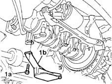
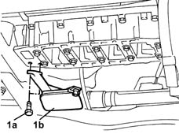

1084B28 engine oil intake pump - r + r with crankcase sump removed
- Path
- Procedures > 10 ENGINE > 1084 ENGINE LUBRICATION SYSTEM > 1084B engine oil lubrication circuit > 1084B28 engine oil intake pump - r + r with crankcase sump removed
- Kind
- repair procedure (removal / refitting; the operation number is the code)
- Applies to
- engines: 1.2 8v, 1.2 16v, 1.4 16v; all production periods
- Interactive page
- https://sloeber94.github.io/elrnDB-lYpsln/en/#/2428963
Applies to: engines: 1.2 8v; all production periods
 Removing
Removing
 Refitting
Refitting1. Undo the bolts (1a) and remove the engine oil inlet (1b).

Applies to: engines: 1.2 16v; all production periods
Removing
Refitting1. Undo the bolts (1a) and remove the engine oil inlet (1b).

Applies to: engines: 1.4 16v; all production periods
Removing
Refitting1. Undo the bolts (1a) and remove the engine oil inlet (1b).
Applies to: engines: 1.2 8v; all production periods
Refitting
RemovingPlace the engine oil inlet back in its housing and secure it using the bolts.
Applies to: engines: 1.2 16v; all production periods
Refitting
RemovingPlace the engine oil inlet back in its housing and secure it using the bolts.
Applies to: engines: 1.4 16v; all production periods
Refitting
RemovingPlace the engine oil inlet back in its housing and secure it using the bolts.